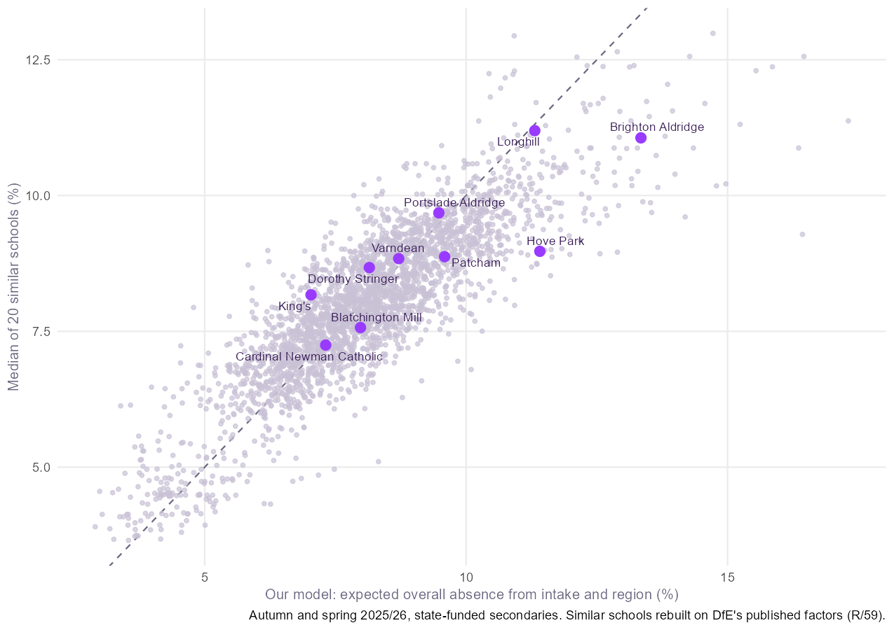
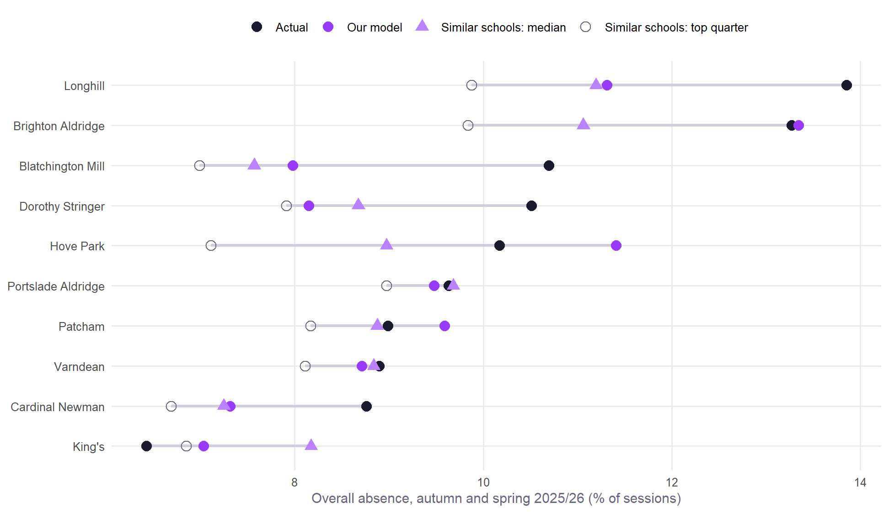

Our model and DfE’s attendance expectations
How DfE sets each school’s attendance baseline improvement expectation (ABIE), and how a rebuild of its similar-schools comparison lines up with our model of absence
NoteAbout this page
- The question: DfE now gives every school an attendance baseline improvement expectation (ABIE). How is it set, and does it agree with what our model says a school’s absence should be, given its pupils?
- The limit: ABIE values are not published. Schools see their own, and local authorities receive school-level workbooks. So this page rebuilds the similar-schools comparison that ABIEs are based on, from published data, and compares that with our model. The real ABIEs can be added once we have a workbook.
- Data: published DfE school absence, census, SEN, finance and GIAS files, and the English Indices of Deprivation. No pupil-level records are used.
In short
- ABIEs are set against 20 statistically similar schools. DfE says each school’s expectation is based on its previous attendance and “the progress of similar schools”, matched on free school meals, SEN, deprivation, EAL, location, funding and size. The formula is not published.
- Rebuilt from published data, that comparison agrees closely with our model. Across 2,906 secondary schools, the median absence of each school’s 20 similar schools and our model’s expected absence correlate at 0.86 in 2025/26, and at 0.84–0.86 in every year since 2021/22. On average they differ by 0.7 percentage points.
- Our model predicts actual absence better (r = 0.75 against 0.67), because it uses more of what a school’s intake is like, including prior attainment, mobility and neighbourhood education.
- Brighton and Hove’s secondaries sit above both benchmarks. In autumn and spring 2025/26 they averaged 10.1% absence. Our model expects 9.4%; their similar schools’ median is 9.0%, and the similar schools’ top quarter 8.1%.
What an ABIE is
- What it is: a school-level expectation of how far attendance should improve. DfE describes it as “the level of improvement expected from a school over time”, and as a minimum, “intended to support ambition, not limit it”.
- How it is set: from the school’s previous attendance and the attendance of schools most like it. Each school’s similar schools comparison report sets it against 20 statistically similar schools in the same phase, matched on:
- free school meals;
- SEN support, including social, emotional and mental health (SEMH) need;
- Gypsy, Roma and Traveller pupils;
- IDACI deprivation of pupils’ home postcodes;
- region, urban or rural setting, and average travel distance;
- English as an additional language;
- funding per pupil;
- number of pupils on roll.
- The benchmarks in those reports: each school is compared with the median of its 20 similar schools, and DfE uses the top quarter of similar schools as “a realistic target” when it identifies a school’s areas of focus.
- The time frame: schools received an indicative one-year ABIE for 2025/26. From September 2026 ABIEs are multi-year, setting the improvement expected by the end of 2028/29, and a school’s ABIE does not change between reports.
- Its status: not an accountability measure, and not shared with Ofsted.
- What is not public: the formula, which attendance measure it is set on, and how the “progress of similar schools” becomes a school’s expectation. Press reports of the Minister’s letter describe the expectations as calibrated with AI; DfE’s guidance does not say how.
- Who has the numbers: each school, in its own reports through DfE’s Monitor your school attendance service; and each local authority, in separate primary and secondary ABIE workbooks holding school-level attendance and multi-year ABIEs for every school in its area.
Rebuilding the comparison
For every state-funded secondary school in the absence models (2,906 of 3,147 have every factor), we found the 20 most similar schools on the factors DfE lists that are published:
- Matched on: free school meals, SEN support, SEMH need, Gypsy, Roma and Traveller pupils and EAL (January 2026 census and SEN files); IDACI score of the school’s own neighbourhood (DfE uses pupils’ home postcodes); income per pupil in 2024-25 (CFR and academies’ accounts); pupils on roll; and urban or rural setting. Each is standardised, and a school in another region counts as one standard unit further away.
- Not matched on: average travel distance, which is not published.
- How this differs from our own twins: see Our twins and DfE’s similar schools. The two sets share only a few schools.
- Result: 55% of each school’s similar schools are in its own region.
- Benchmarks, each year: the median overall absence of the 20, and their top quarter (the 25th percentile), for 2021/22 to 2024/25 (full years) and the autumn and spring terms of 2025/26. The same 20 schools are used every year.
- Our model, each year: the overall-absence model on What goes with school absence, refitted to each year, giving each school’s expected absence from its intake and region (no local authority effect, as the similar-schools comparison has none).
Does it agree with our model?
| Year | Schools | Model vs similar: r | Mean gap (points) | Mean, model (%) | Mean, similar median (%) | Mean, actual (%) | Actual vs model: r | Actual vs similar: r |
|---|---|---|---|---|---|---|---|---|
| 2021/22 | 2,819 | 0.84 | 0.72 | 8.7 | 8.6 | 8.7 | 0.71 | 0.62 |
| 2022/23 | 2,865 | 0.85 | 0.77 | 8.8 | 8.6 | 8.7 | 0.76 | 0.68 |
| 2023/24 | 2,906 | 0.86 | 0.78 | 8.6 | 8.4 | 8.6 | 0.78 | 0.70 |
| 2024/25 | 2,906 | 0.86 | 0.73 | 8.2 | 8.0 | 8.2 | 0.75 | 0.67 |
| 2025/26 | 2,906 | 0.86 | 0.70 | 8.1 | 8.0 | 8.1 | 0.75 | 0.67 |
- They agree closely, as they should: both ask what absence is usual for schools with pupils like these.
- Our model is the better predictor of what schools actually record. It uses prior attainment, mobility, neighbourhood education and the full mix of SEN need. The similar-schools median rests on 20 schools, so it is noisier.
- The similar-schools median runs a little lower than our model’s expectation (by 0.12 points in 2025/26), because a median of skewed absence sits below the mean.
Brighton and Hove


| School | Actual | Our model | Similar median | Similar top quarter | Actual minus model |
|---|---|---|---|---|---|
| Longhill High School | 13.9 | 11.3 | 11.2 | 9.9 | +2.5 |
| Brighton Aldridge Community Academy | 13.3 | 13.3 | 11.1 | 9.8 | -0.1 |
| Blatchington Mill School | 10.7 | 8.0 | 7.6 | 7.0 | +2.7 |
| Dorothy Stringer School | 10.5 | 8.1 | 8.7 | 7.9 | +2.4 |
| Hove Park School and Sixth Form Centre | 10.2 | 11.4 | 9.0 | 7.1 | -1.2 |
| Portslade Aldridge Community Academy | 9.6 | 9.5 | 9.7 | 9.0 | +0.2 |
| Patcham High School | 9.0 | 9.6 | 8.9 | 8.2 | -0.6 |
| Varndean School | 8.9 | 8.7 | 8.8 | 8.1 | +0.2 |
| Cardinal Newman Catholic School | 8.8 | 7.3 | 7.2 | 6.7 | +1.4 |
| King’s School | 6.4 | 7.0 | 8.2 | 6.8 | -0.6 |
- The city’s schools have run above both benchmarks in every year. The gap to our model’s expectation was 0.8 points in 2021/22, 1.3 in 2024/25 and 0.7 in the first two terms of 2025/26.
- The two benchmarks mostly agree on which schools run above what their pupils predict: Longhill, Blatchington Mill, Dorothy Stringer and Cardinal Newman are above both.
- They disagree on two schools. Our model expects much of Brighton Aldridge’s and Hove Park’s absence from their intakes, so on our model both sit at or below expectation. Their 20 similar schools have lower absence, so against the similar-schools median both look high. Which an ABIE follows matters for what is asked of these two schools.
- An ABIE set from the similar-schools median or top quarter would ask the city’s schools for more improvement than our model does, because the similar-schools benchmarks run lower than our model’s expectation.
What a direct comparison needs
- The ABIE workbook. Brighton and Hove City Council’s attendance team holds the secondary ABIE workbook for the city’s schools: school-level attendance and multi-year expectations to 2028/29. With it, each school’s ABIE can be plotted against our model’s expectation and the rebuilt similar-schools benchmarks above, and we can test which the ABIEs follow.
- Travel distance. DfE matches on pupils’ average travel distance, which is not published. The routing data behind Distance to school could stand in for it.
TipThe method
Similar schools. For school \(i\), the distance to school \(j\) is
\[d_{ij} = \sum_{k} (z_{ik} - z_{jk})^2 + \mathbb{1}[\text{region}_i \neq \text{region}_j],\]
over the standardised factors \(z_k\): FSM %, SEN support %, SEMH need %, Gypsy, Roma and Traveller %, IDACI score of the school’s LSOA (IoD 2019), EAL %, income per pupil 2024-25, log pupils on roll, and urban/rural band (three levels). The 20 smallest \(d_{ij}\) are its similar schools. Equal weights are an assumption: DfE does not publish its weights.
Our model. For each year \(t\), log overall absence on the absence model’s school characteristics, with region and local authority random effects; the expectation is
\[\hat y_{it} = \exp\left(x_i'\hat\beta_t + \hat u_{\text{region}(i),t}\right)\cdot \bar s_t - 0.1,\]
where \(\bar s_t\) is the mean of the exponentiated residuals (a smearing factor). The characteristics are those of January 2026 in every year.
lmer(log(overall + 0.1) ~ fsm + sen_sup + ehcp + semh + ... + (1 | region / la), data = dd) # R/59
predict(m, re.form = ~ (1 | region))Caveats. The IDACI score is for the school’s own neighbourhood, not pupils’ homes. Using the same 20 schools and the same characteristics every year ignores changes in intake. DfE’s own comparison uses daily attendance data from the start of the year to the latest term, which can differ from the published termly statistics.
Sources
- DfE (2026) Monitor your school attendance: user guide, updated 23 November 2026: the similar schools comparison and ABIEs.
- DfE, Pupil attendance in schools and its methodology.
- Reports of the Minister’s letter on ABIEs: SecEd; Tes; Browne Jacobson; NGA.
- Data: DfE Pupil absence in schools in England (school level, 2021/22 to 2024/25; autumn and spring 2025/26); Schools, pupils and their characteristics and Special educational needs in England, January 2026; consistent financial reporting and academies accounts return, 2024-25; Get Information about Schools; English Indices of Deprivation 2019 (IDACI).
- Ours:
R/08_absence_causes.R(the absence models),R/59_abie_benchmark.R(this page).